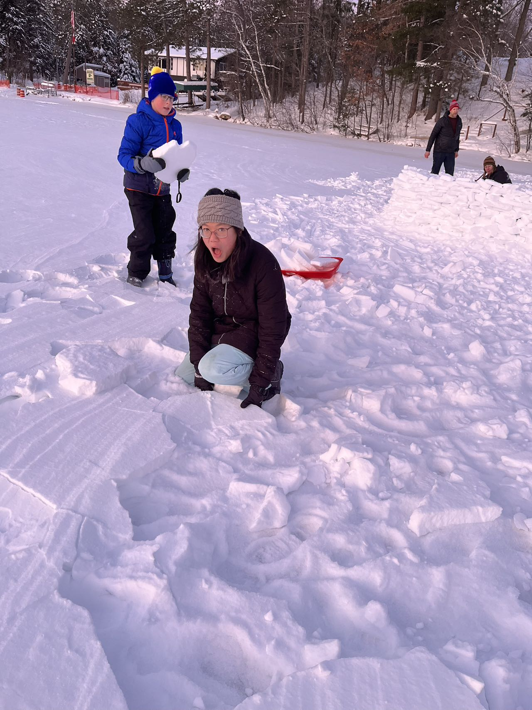

This past winter, I returned to Wisconsin to stay with my host family when I was an exchange student my sophomore year in high school. We went to Woodboro after Christmas, and this set of photos shows us playing at the lake, and you can see in these eight photos that we were building the snow fort, and how the sky changed.
This photo shows what the lake and sky looked like when we just got there. You can see that there’s no footprints on the snow.
The second photo shows me blowing the snow on my gloves. The sky was clear and bright.
This photo shows that by this time the sky had changed a bit and the sun was setting. Our footprints also appeared on the snow.

This photo shows the members of my host family. Closest to the picture are my host sister and brother, and you can also see the snow fort that we were building.
This photo shows the sky after a while. By this time the sky had turned pinkish-purple and become darker.
The sixth photo shows the snow fort of our efforts for an hour, by which time it was darker and the sun was falling even more.
The seventh photo was taken before we left the lake, I was standing at about the same place as the second photo. You can clearly see how much the sky has changed.
The eighth photo was taken as we left the lake and I was on the steps of the lakeside cabin. The sky was golden at this point, the look of the sun's afterglow.